BOOTCAMP • IIT DELHI • CHANGEMAKING
Young Changemakers Bootcamp at IIT Delhi
I was chosen to attend the Young Changemakers Bootcamp (YCB) at IIT Delhi, selected through a competitive process involving a written application, group discussion, and interview. This one-week residential program was designed to foster entrepreneurial innovation and real-world problem-solving skills among high school students.
The program introduced me to practical methodologies like design thinking, empathy-driven frameworks such as TALL (Try, Ask, Look, Learn), and tools like Figma for prototyping and ideation. Interactions with changemakers like Sagarika Deka, Heemank Verma, Ganesh Bagler, Anugrah Sehtya, and Dr. Sapna Yadav were transformative, inspiring me to think critically, act purposefully, and prioritize empathy in solving complex challenges.
Discussions with Enactus Ramjas provided invaluable insights into collaborative problem-solving and sustainability, particularly around ideas like sustainable packaging. Living independently for seven days, I also developed key skills in critical problem-solving, interdisciplinary collaboration, and independent thinking.
This experience not only strengthened my technical and entrepreneurial abilities but also instilled in me the mindset of a changemaker, equipping me to tackle pressing global challenges with creativity, empathy, and impact-driven action.
Pictures from IIT Delhi
A glimpse of the experience
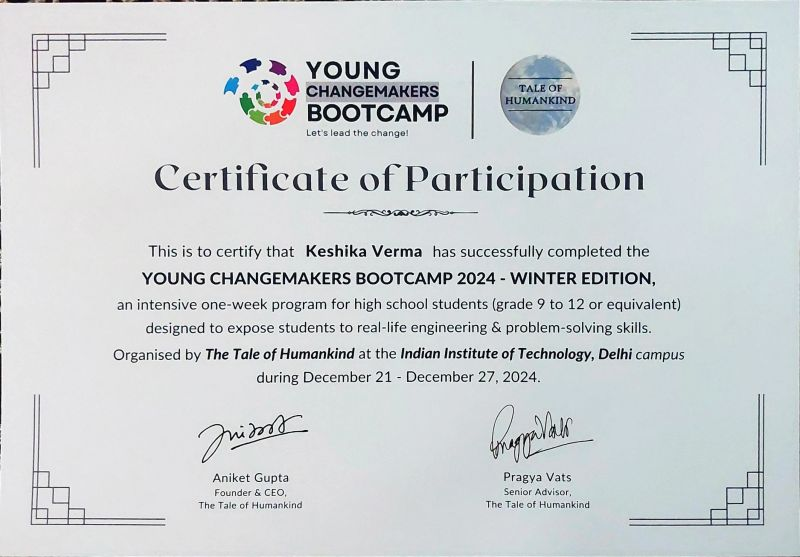

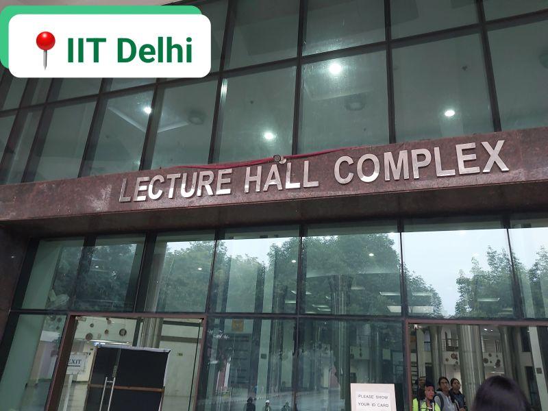
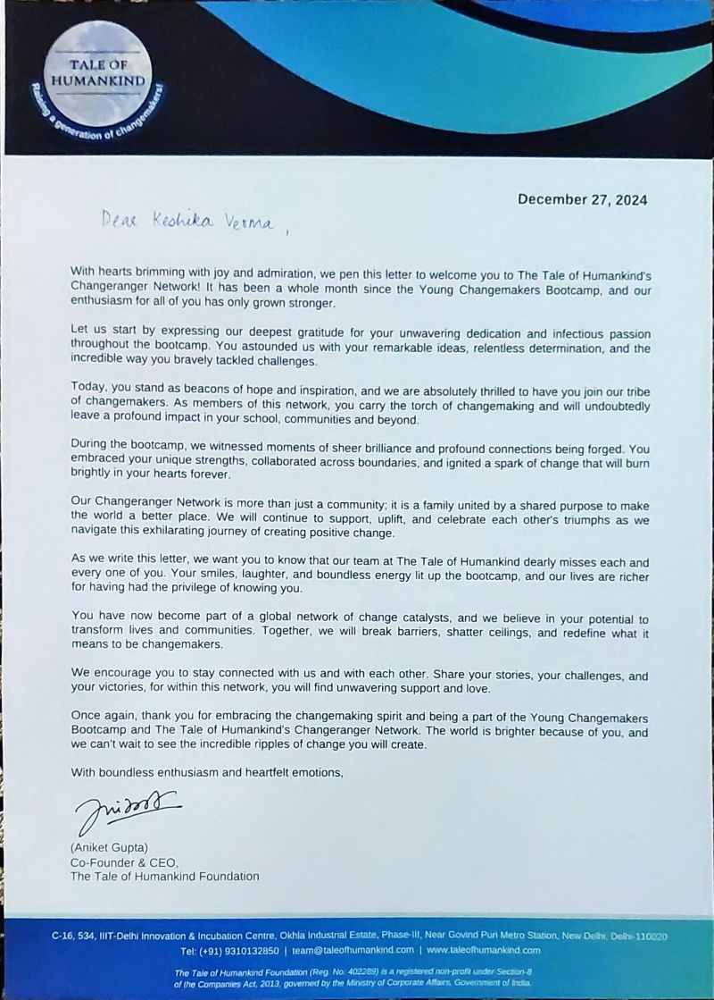
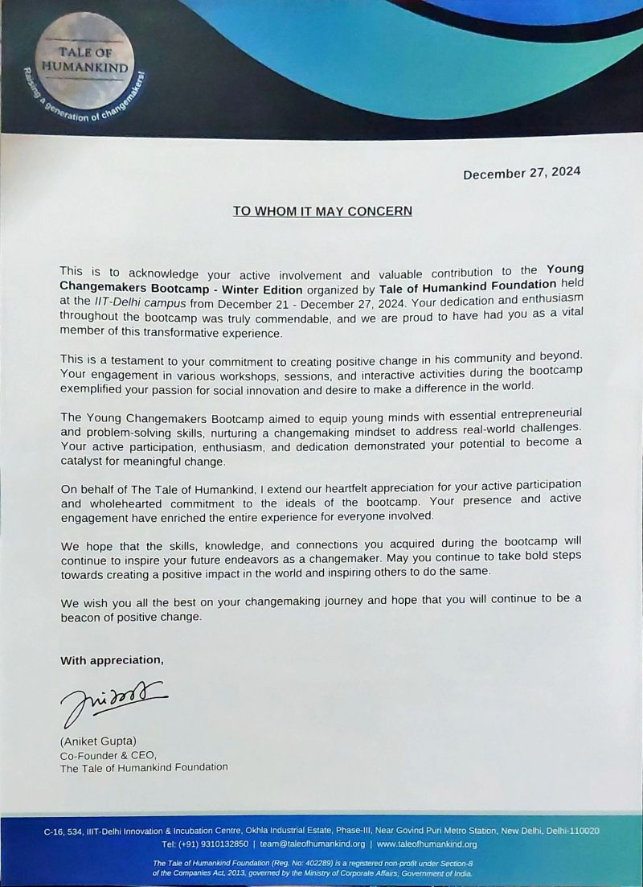
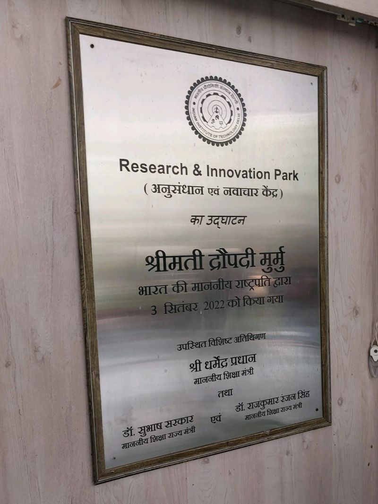
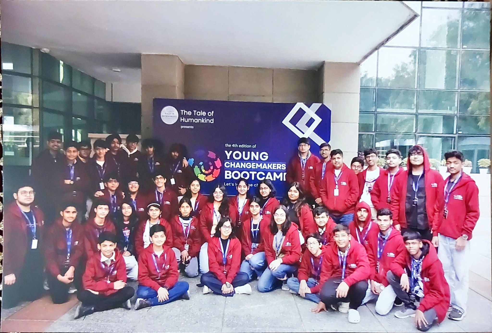
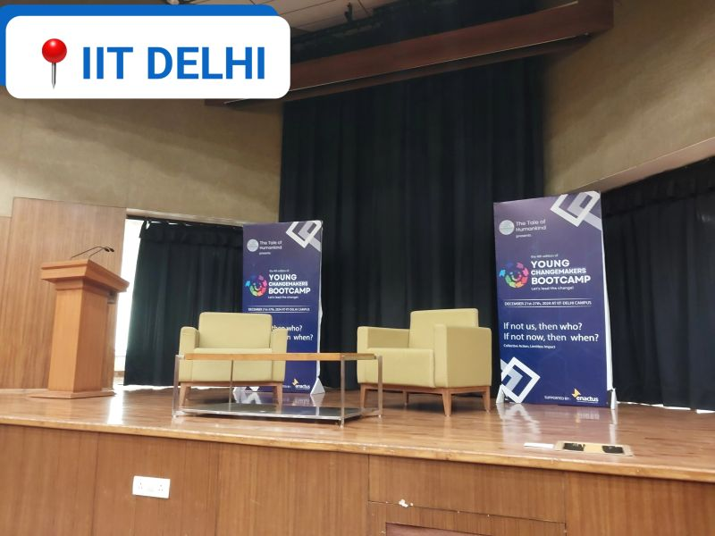
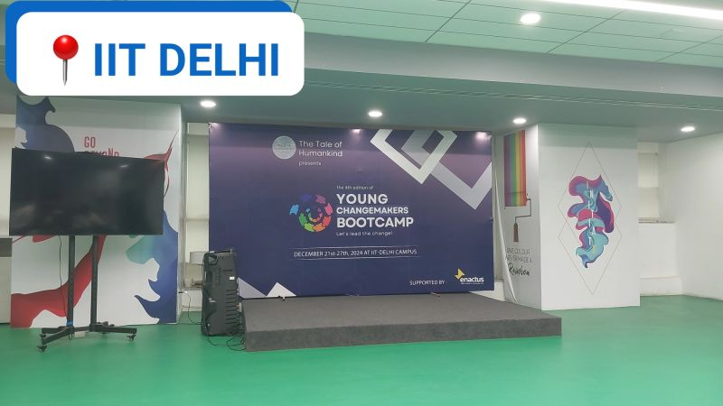
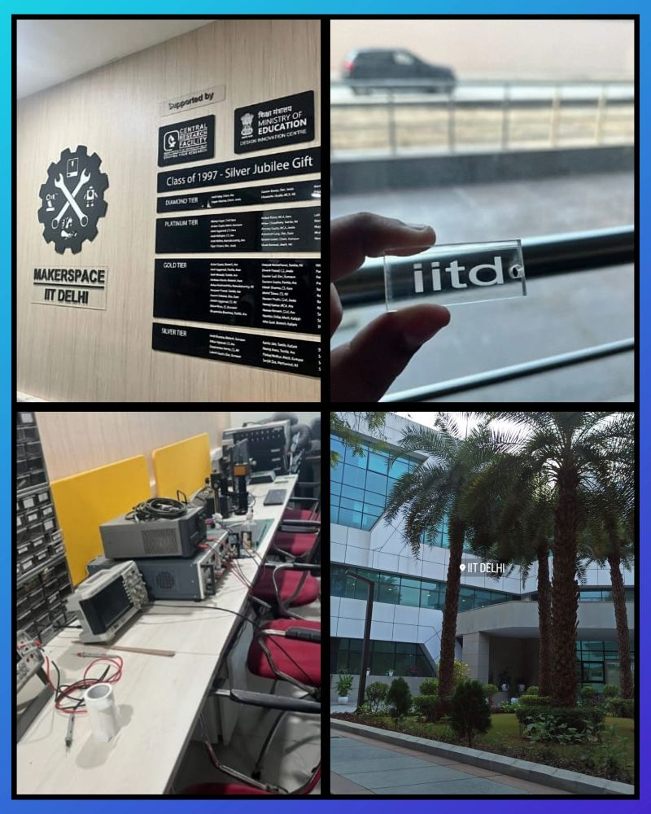
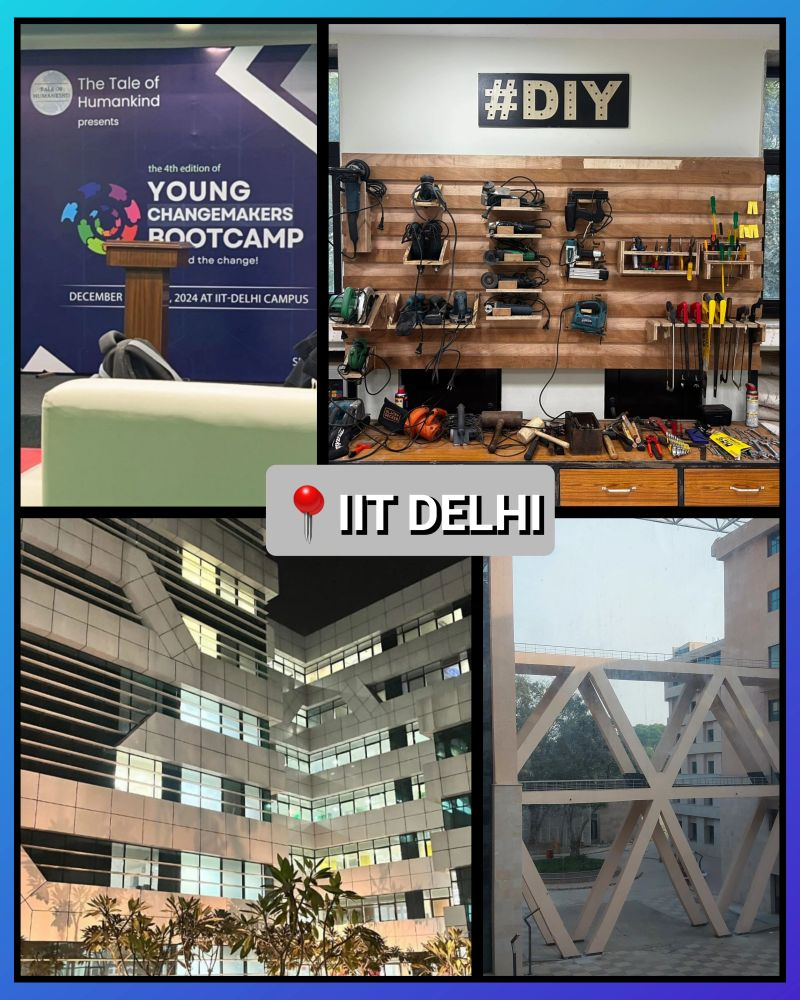
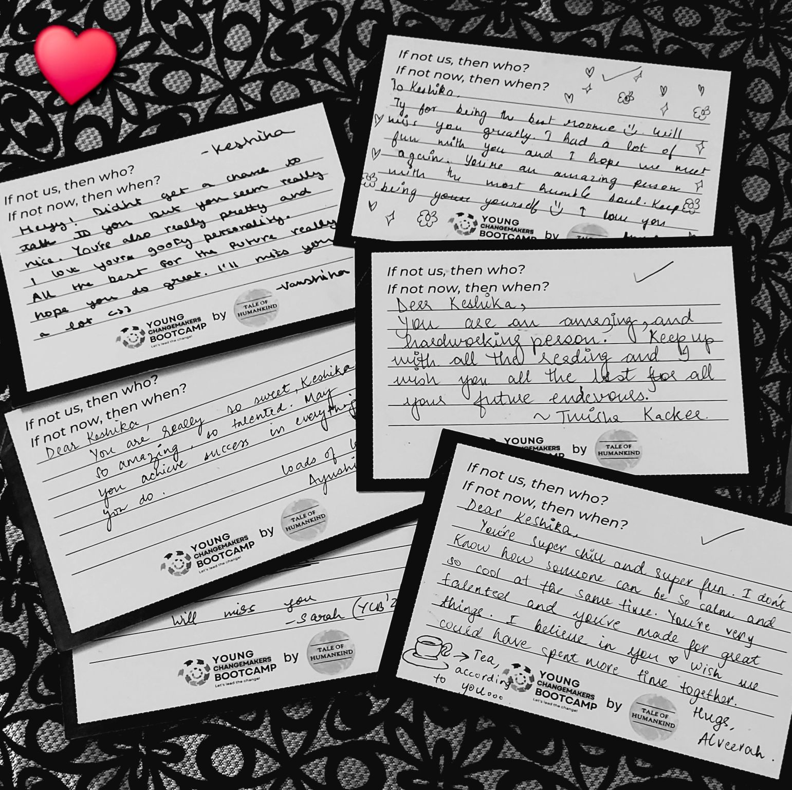
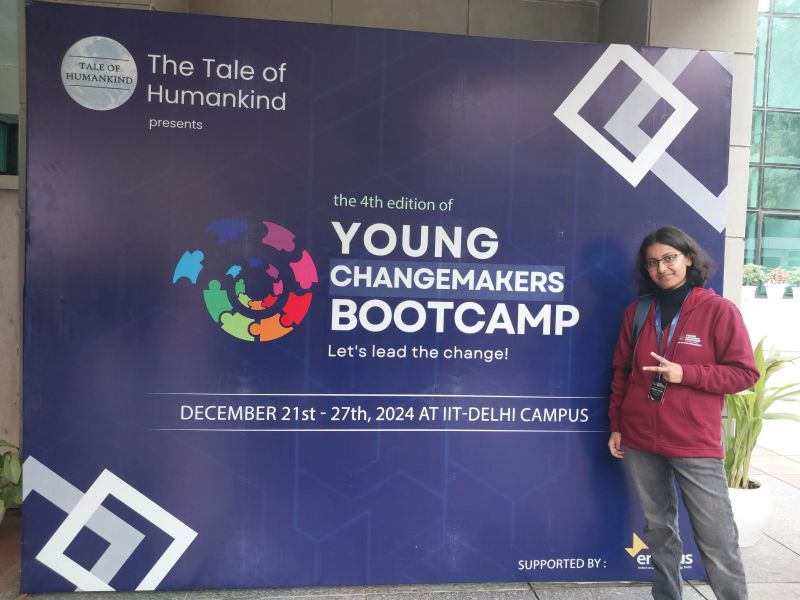

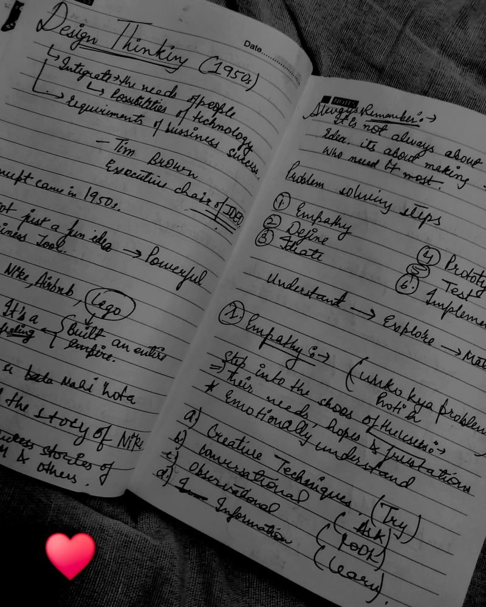
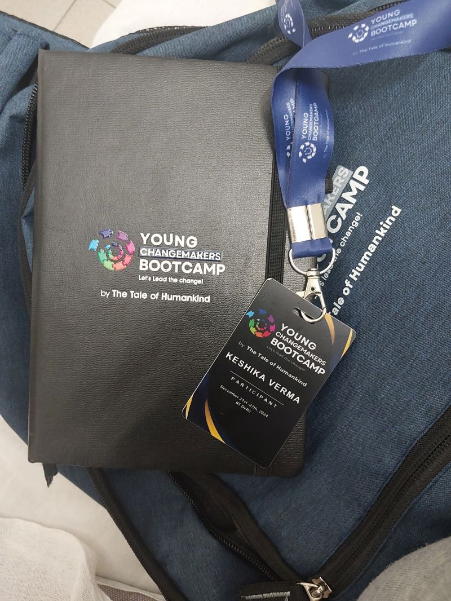
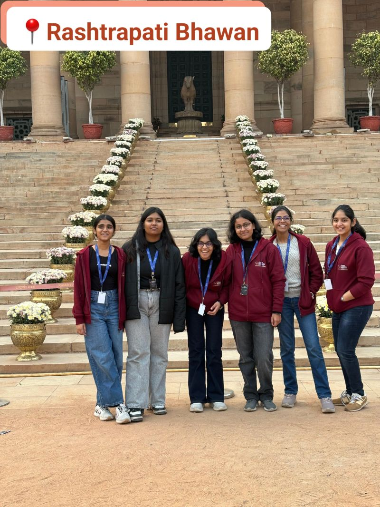
Back to initiatives
This experience became an important part of my journey as a learner, builder, and changemaker.
View More Initiatives →